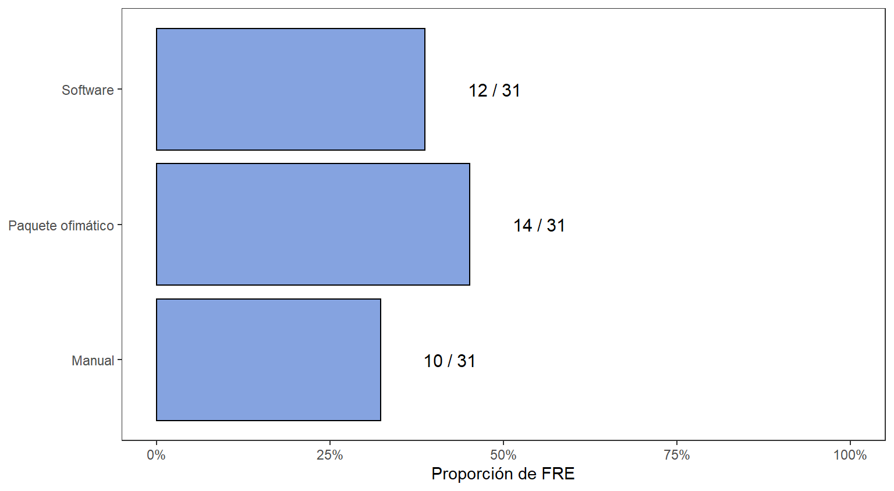
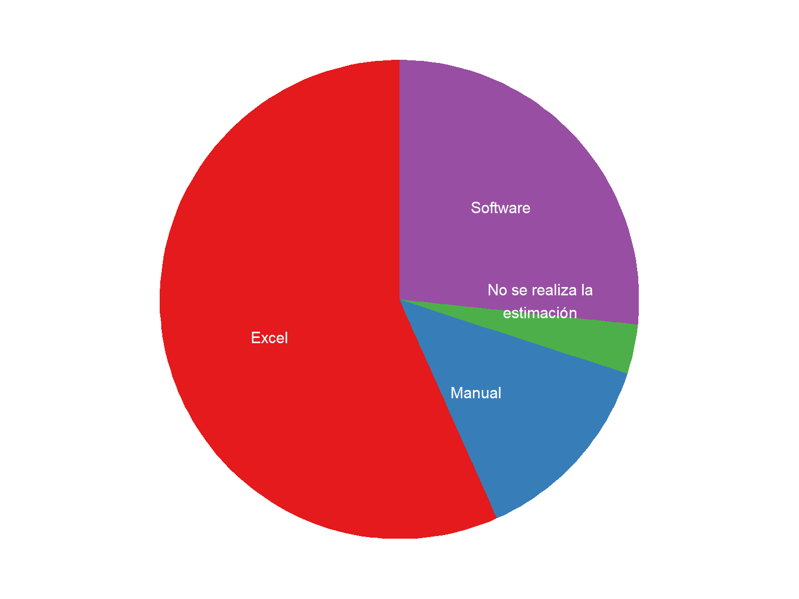
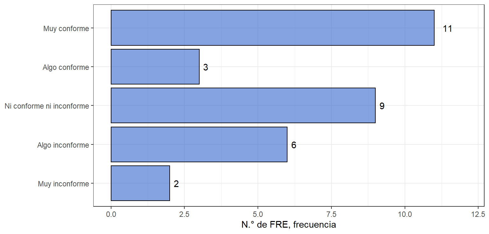
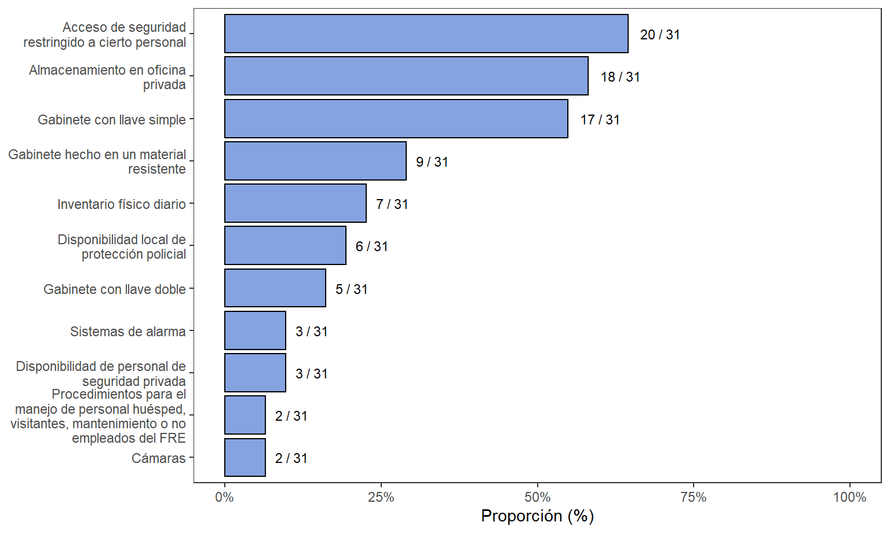
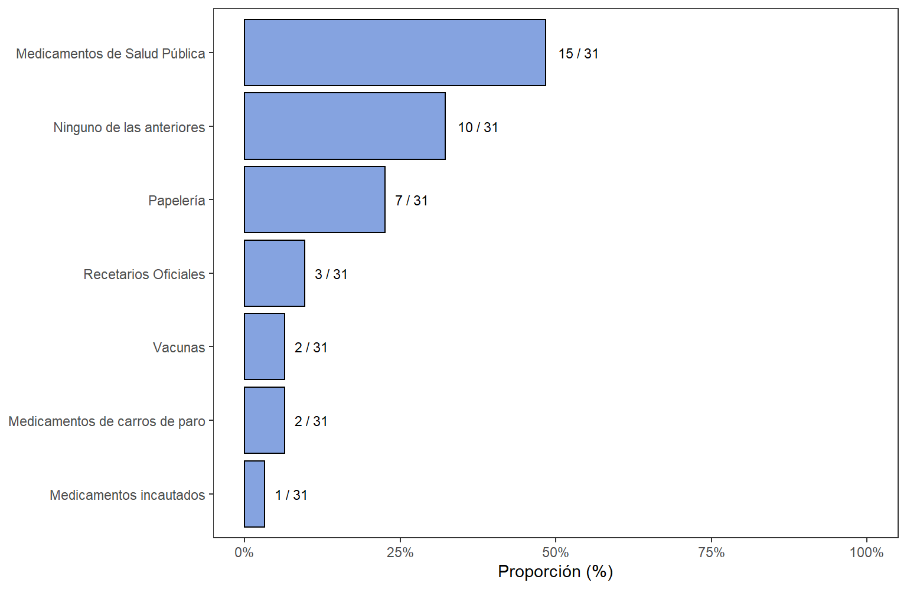
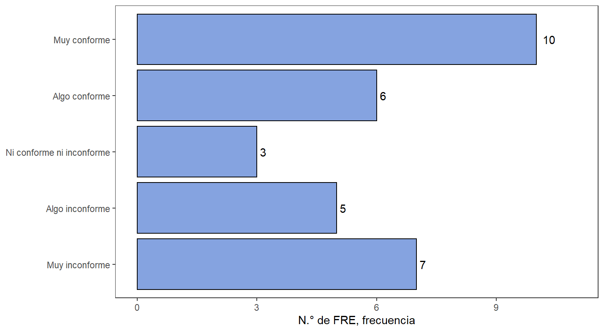

4.4 Adquisición de MME y manejo de inventarios
4.4.1 Adquisición de MME por parte del FRE
Figura 4.39: Herramientas en el manejo de inventarios
Figura 4.40: Herramientas en el manejo de inventarios (detallado)

Figura 4.41: Proporción de Herramientas en el manejo de inventarios
Figura 4.42: Demoras en el proceso de adquisición por departamento
Figura 4.43: Demoras en el proceso de adquisición por departamento (detallado)

Figura 4.44: Caracterización en demoras de traslados interdepartamentales

Figura 4.45: Mapa con demoras de traslados interdepartamentales

Figura 4.46: Opinión sobre la plataforma Colombia Compra Eficiente
Figura 4.47: Frecuencia de compras de medicamentos por año al FNE

Figura 4.48: Frecuencia de venta de MME a instituciones en el departamento

4.4.2 Recepción de medicamentos
Figura 4.49: Tiempos en la recepción técnica y almacenamiento de MME

Figura 4.50: Tiempos en la recepción técnica y almacenamiento de MME (mapa)

Figura 4.51: Uso de niveles de seguridad del inventarios

4.4.3 Vencimiento de medicamentos
Figura 4.52: Presentación de casos de vencimiento de MME

Figura 4.53: Medicamentos implicados en casos de vencimiento de MME

4.4.4 Almacenamiento
Figura 4.54: Medidas de seguridad en el almacenamiento de MME
Figura 4.55: Frecuencia de revisión de condiciones ambientales

Figura 4.56: Tecnologías de control y seguimiento de condiciones ambientales

Figura 4.57: Frecuencia de calibración y mantenimiento de equipos de seguimiento ambiental

Figura 4.58: Productos compartidos en el almacén de MME
Figura 4.59: Opinión del servicio de la distribución de los medicamentos MME
Figura 4.60: Frecuencia del control de existencias de medicamentos MME

Figura 4.61: Frecuencia del control de existencias de medicamentos MME (mapa)

Figura 4.62: Utilización de técnicas de semaforización en el manejo del inventario

Figura 4.63: Ocupación promedio del MME frente a otros medicamentos o ítems almacenados en el FRE